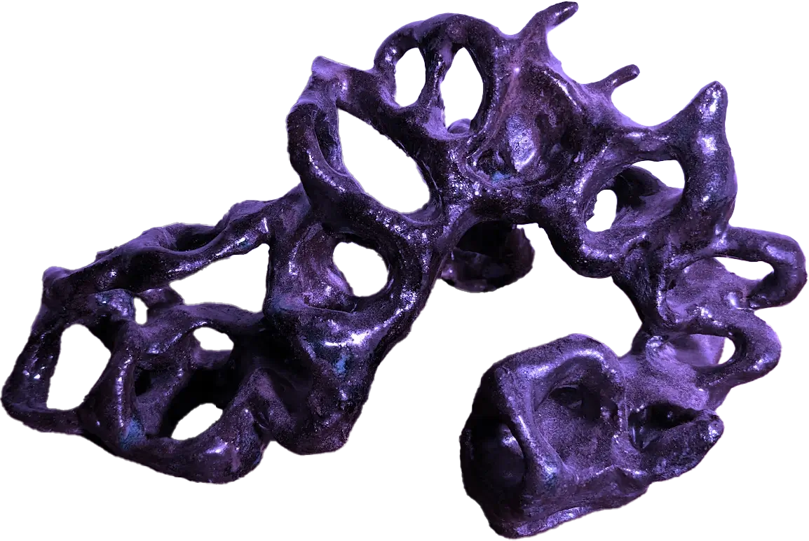
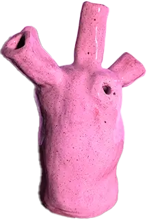
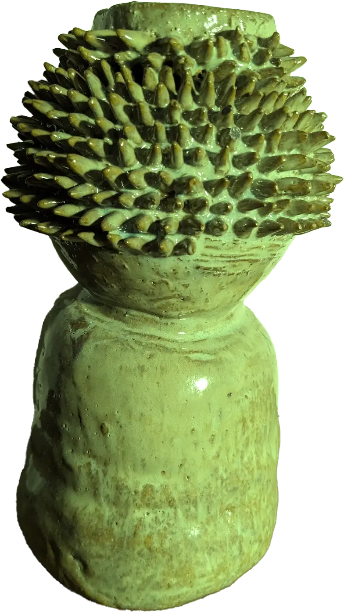
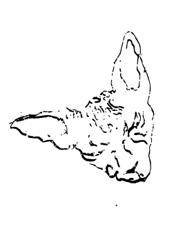
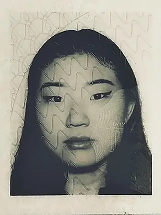

KIM HYE REE 김혜리




SOFIE KJÆR - MADSEN
Jeg læser multimediedesign på KEA på mit første semester. For to år siden fandt jeg min store interesse for keramik, som er blevet et meditativt frirum. Jeg bor med min kæreste Daniel og min kat Kafka. Daniel spiller musik så vores hjem er et kreativt rum for os begge. Min store drøm langt ud i fremtiden er at starte egen virksomhed op med fokus på at etablere en forbindelse mellem Korea og Danmark. Det har særlig betydning for mig på grund af min koreansk adopterede baggrund.

KONTAKT
sofie.km@hotmail.com
hyereekim.dk
29 89 20 67
ERHVERVSERFARING
2017-2018 LINK Arkitektur, piccoline
UDDANNELSE
2018-2022 Aarhus HF og VUC
2022 - Multimediedesign KEA
UDVIKLING OG FÆRDIGHEDER PÅ FØRSTE SEMESTER
PROJEKTARBEJDE
Vi har gennem første semester arbejdet med fem forskellige temauger. Dette har styrket min evne til at anvende mine færdigheder i praksis. Jeg har arbejdet på opgaver, der både har være lærerige og udfordrende.
PROBLEMHÅNDTERING
Gennem løsningen af forskellige opgaver har jeg stået over for udfordringer men har for hver opgave lært af min tidligere fejl og få rettet op på det til næste opgave.
REFLEKSION
Gennem første semester har jeg en følelse af at jeg har udviklet mig meget. Jeg har yderligere reflekteret over mine opgaver, præstationer gennem dette halve år hvilket har hjulpet mig med at udvikle mig på uddannelsen.
FÆRDIGHEDER
I løbet af første semester har jeg udviklet kompetencer gennem undervisning om kodning og visuelt design, animation og video. Jeg har arbejdet med programmer som Adobe-pakken, Visual Studio Code og Figma.